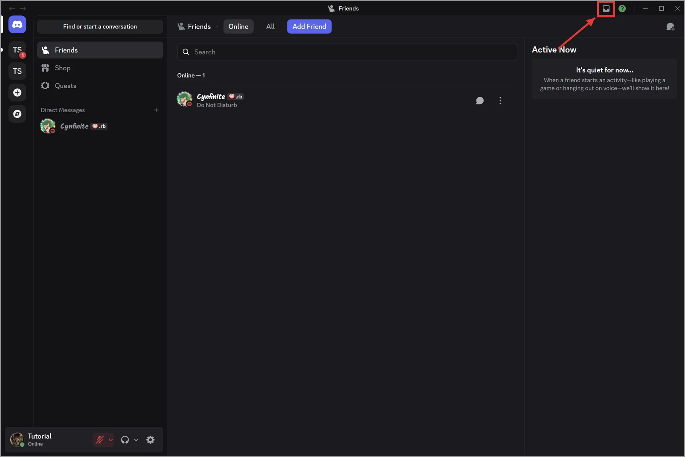
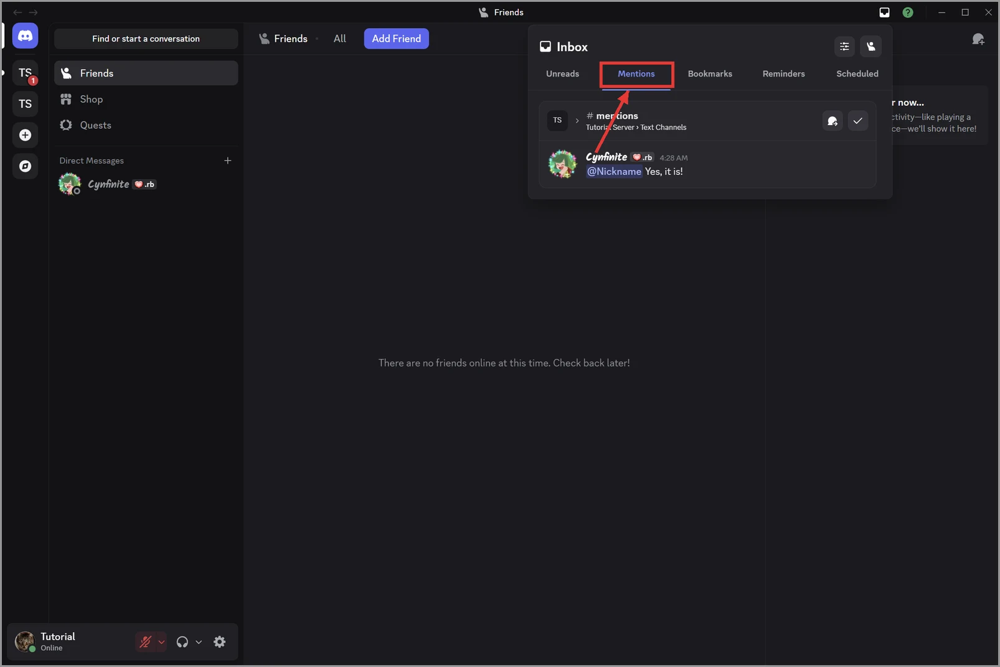
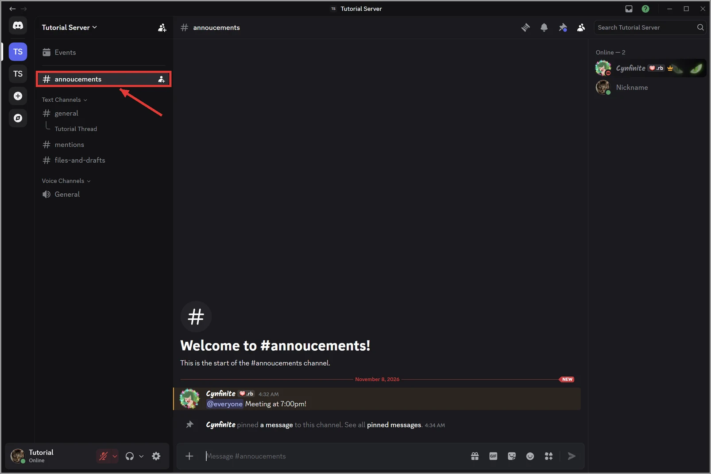
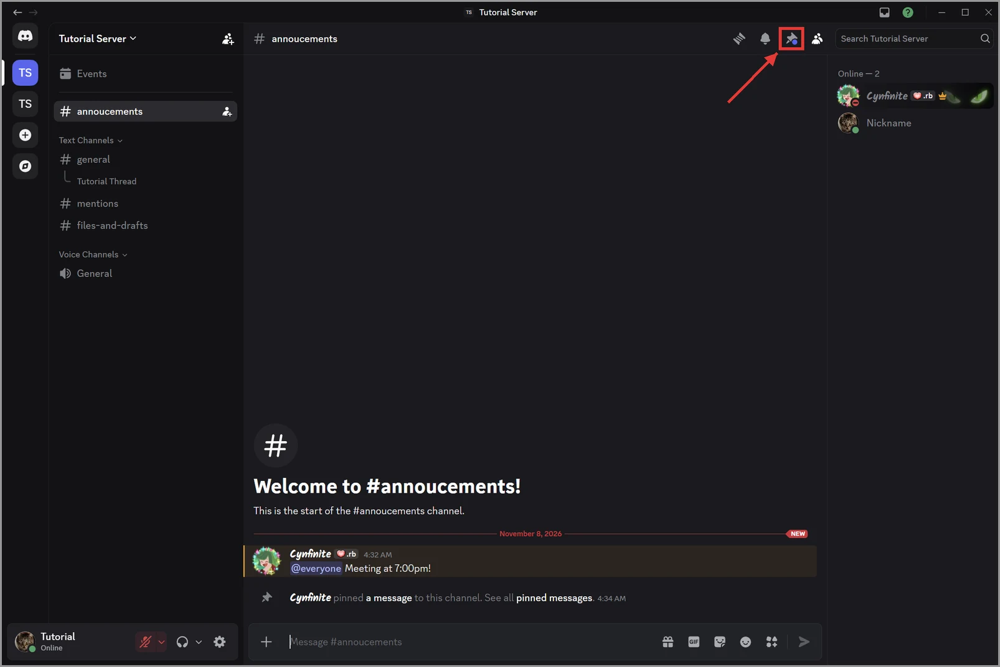
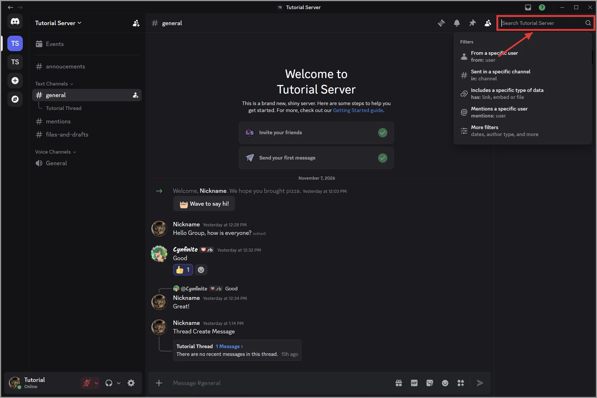
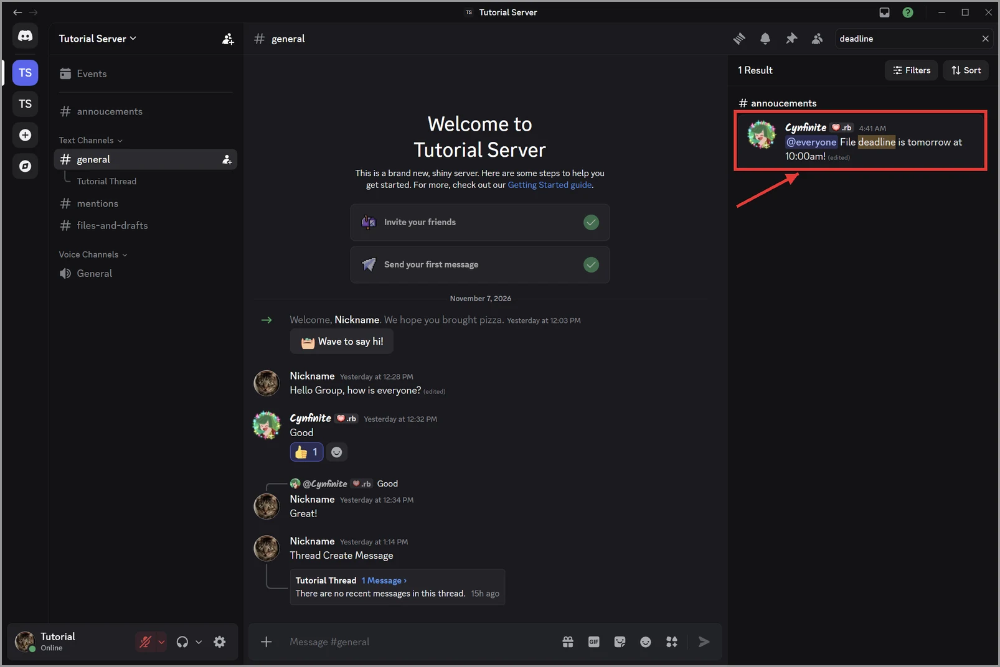
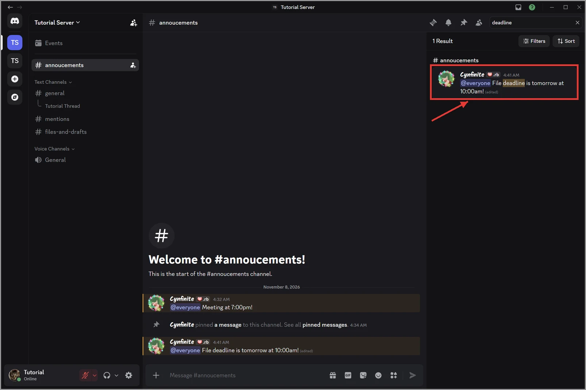

5.3 Finding Messages You Missed
After a day away from Discord, use these four tools to find deadlines and meeting changes quickly.
Unread indicators and mention badges
- An unread indicator is a white dot to the left of a server icon or a bold channel name. It means there are new messages.
- A mention badge is a red circle with a number. It means someone mentioned you, and the number shows how many times.
Check channels with a red badge first, because those messages are meant for you.
Use the Inbox
The Inbox collects recent mentions from every server in one list.
- Click the tray icon at the top-right of the Discord window.

Figure 5.3.1: The tray icon (Inbox) at the top-right of the Discord window - Click the Mentions tab.

Figure 5.3.2: The Mentions tab in the Inbox - Click Jump next to a message to open it in its channel.

Figure 5.3.3: The jump icon next to a mention in the Inbox
Check pinned messages
Groups often save deadlines and meeting links as a pinned message.
- Open the channel you want to check.

Figure 5.3.4: Opening a channel from the channel list - Click the pin icon at the top-right of the window.

Figure 5.3.5: The pin icon at the top-right of the window - Click Jump next to a pinned message to see it in the conversation.

Figure 5.3.6: The Jump button next to a pinned message
Search for a message
- Click the Search box at the top-right of the window.

Figure 5.3.7: The Search box at the top-right of the window - Type a word from the message, such as deadline.

Figure 5.3.8: Typing deadline in the Search box - Press Enter.

Figure 5.3.9: The search results after pressing Enter - Click a result to jump to that message.

Figure 5.3.10: Clicking a search result to jump to the message